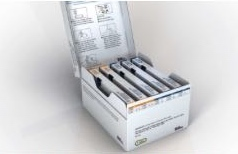

Why Gilenya Failed

March 25, 2019
Gilenya is an oral tablet developed through the drug company Novartis. I never experienced any side effects except those relating to my blood count. The patient is to be removed if the patients white blood count ever drops below .6. My body overachieved and my white blood count dropped significantly below .6 down to around .3. at that point my neurologist removed me from Gilenya.
The Side Effect Only 1% Experience on Rebif

November 5th, 2019
My doctor placed me on the shot Rebif in July of 2019 which I was forced to give myself 3 times a week. I never really had many issues with the shot minus a little redness here and their for a couple of days at the injection site of the day. However in November that all changed. I went to Ovilla to get my husband who was on shift at the fire station to give me my shot because it was the day in my rotation to get it in the butt cheek. I left there and within 30 minutes the injection site was a massive knot. That is actually quite normal, however following that within 2 hours I was attempting to get out of my car and my body stopped working, I was losing feeling in my legs. I called my husband and told him I needed to take the girls to his moms immediately could he call her. I barely was able to get in the car and operate it to get the one mile down the street to get the girls to my mother in laws. The girls went inside, I made it home, I opened my door to the car, pulled myself out threw up across the driveway, made it in and collapsed in the bed. I couldn't move. I was paralyzed. I couldn't get up, I couldn't even roll over from the position I was in.
The 3rd and Final Treatment

After a Massive relapse that almost wrecked my entire life. My doctor and I discussed several of our next options. Mavenclad won out, at the time it was the newes on the market. It had a different mechanism then all the other options I was offered, and sounded the most promising. After much fighting with my insurance and then having to appeal two times, the drug company Serano, paid for my first year of treatment. I took both months of year one, with no real side effects in all honesty. For the most part other than being once again in the white blood count danger zone at .27, I decided I needed a change. I am just now in the .3 range after 8 months of being on my treatment, and my immune system is highly compromised. I wouldn't necessarily call this treatment a true fail, its just after several months of being home in the heat of the summer and spending every day in the outside just to get a breather, has made me realize I want to be able to live my life without fear.